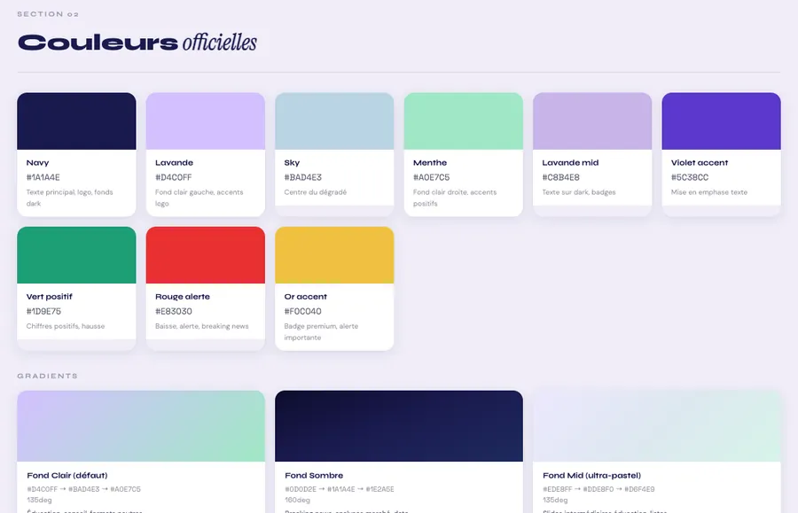
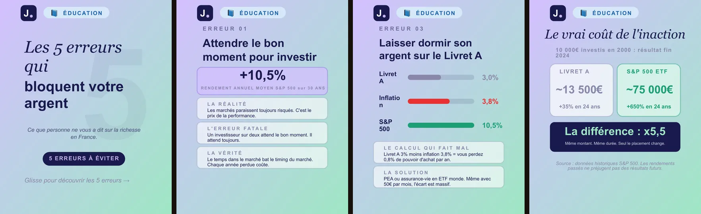

·Scriptwriter application
I built a finance media brand from zero.
Now I want to bring that builder mindset to Finary Media.
I’m Julien Denis. I built Julien Invest from scratch into a French financial education brand with 50K+ followers on TikTok, alongside YouTube, financial tools, a course and coaching. I research, write, present, design and build the systems behind the content myself.
Currently in Sydney 🇦🇺 · Open to relocating to Paris 🇫🇷
On site, hybrid or remote opportunities are all possible. For Finary, I’m ready to relocate to Paris.

Plus 2,200 on Instagram. Figures from my public accounts.

I built the whole thing myself.
Julien Invest · financial education for French speaking investors.
Built from 2021 · full time since 2026
I built Julien Invest from zero while working full time as a PE teacher. Positioning, research, scripts, filming, editing, thumbnails, carousels, website, financial calculators, course and coaching: I owned the whole pipeline.
From idea to published piece.
- Research
- Structure
- Write
- Present
- Edit
- Package
- Publish
- Learn
Research
I find, compare and synthesise information before writing.
Writing
Hooks, scripts, carousels and long form content, written for the audience and for the ear.
Storytelling
I turn technical topics into narratives people can follow, instead of dumping information.
Camera
I present my own content and explain financial subjects directly on camera.
Packaging
Titles, thumbnails, openings and structure are part of the content, not an afterthought.
Autonomy
I’m used to owning the entire process, from idea to publication.
AI is how I work.
Not as a writing shortcut. As an operating system.
- Idea
- Research
- Knowledge
- AI · prompts · agents
- Draft
- Human reviewMe
- Design
- Export
- Publish

Content production pipeline
I built a production system for Instagram carousels that handles content generation, layout and export while respecting predefined brand rules. A lint step checks the layout rules before anything is exported.
Structured knowledge
I use structured references, project context and editorial constraints instead of generic prompts. Every carousel comes with a fact check file: each claim gets a source, a reliability level and a date.
AI assisted building
I use AI assisted coding tools to build websites, financial tools, automations and internal systems myself. julieninvest.com, its 13 simulators and this page were built that way.

ToolsClaude Code · ChatGPT · Codex · Nano Banana · HTML/CSS/JS · Canva · CapCut · Systeme.io
AI increases my leverage. I remain responsible for the output.
Finance is the subject. Content is the craft.
I built Julien Invest around personal finance and investing because I enjoy understanding complex financial subjects and finding the clearest way to explain them.
Selected subjects I’ve researched and published

Succession : comment transmettre ton patrimoine sans payer 45 % d’impôts
How French inheritance tax works, and how to prepare a transfer of wealth.
Watch on YouTube ↗ Retirement and decumulationDésaccumulation : combien retirer de ton capital sans jamais le vider
How much you can draw from a portfolio without running it down.
Watch on YouTube ↗ French taxationTous les impôts que tu paies en France (et que personne ne t’explique)
Every tax a French resident pays, explained in one video.
Watch on YouTube ↗ Real estate and listed marketsREITs : l’immobilier coté en bourse (accessible depuis ton CTO)
REITs: owning real estate through the stock market.
Watch on YouTube ↗I’m now looking to push that depth further: more advanced investing, wealth structuring and content for sophisticated investors.
Proof of work.
PEA 2026 : le guide complet
Opening, funding and choosing ETFs for France’s main tax wrapper, in one video.
YouTube · Analysis50 000 € à investir : tout d’un coup ou petit à petit ?
Lump sum or regular investing: a classic question, worked through step by step.

CRYPTO : comment l’acheter et la sécuriser sans te faire piéger
The thumbnail carries the promise before the title does.

Je te montre le site le plus complet pour apprendre à investir ton argent
A carousel presenting julieninvest.com to my Instagram audience.

Tes outils d’investissement
Compound interest, FIRE, retirement, inflation and tax simulators, free on the site.

Compare les ETF
Filter ETFs by wrapper, fees and region, then compare two side by side. Built with AI assisted code.
Why Finary
I’ve spent the last few years learning how to build alone.
What I want next is an environment where the editorial standard is higher, the audience is larger, and the problems are more demanding.
The role at Finary sits exactly at that intersection for me: finance, storytelling, YouTube, fact checking, on camera delivery and AI native production.
I’m particularly interested in the jump from content aimed mainly at younger investors to subjects that require more depth, nuance and precision.
What I already bring
- Finance content for a real audience
- Writing
- Camera
- Full production ownership
- AI native workflows
- Builder mindset
Where I want to grow
- More advanced investing subjects
- Wealth structuring
- Content for sophisticated investors
- Larger scale YouTube
- Team based editorial work
Watch me explain something.
A full video, researched, written and presented by me. Nothing plays until you click.
I’d love to talk.
If my background looks relevant to what you’re building at Finary, I’d be happy to discuss the role.
Currently in Sydney · Ready to relocate to Paris